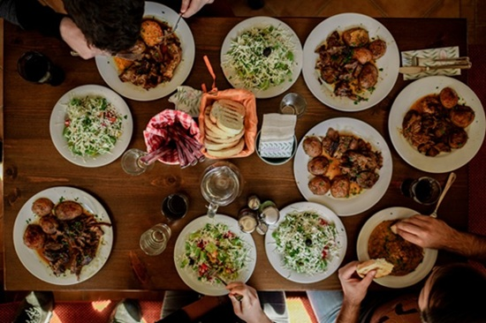

Welcome to Family Fork Weekly
Family Fork Weekly is a meal-planning website created to help busy families organize weekly meals, find simple recipes, and make grocery shopping easier. The goal of this website is to provide practical meal ideas that are affordable, easy to follow, and realistic for everyday schedules.
This website focuses on simple planning, family-friendly meals, and helpful kitchen organization. Visitors can explore weekly meal plans, recipe ideas, grocery planning tips, and contact information in one easy-to-use place.

Featured Weekly Meal Plan
A featured weekly meal plan gives visitors a starting point for organizing meals before the week begins. This site includes dinner ideas, planning notes, and grocery list tips to help make the process easier.
- Plan simple dinners before the week starts.
- Choose recipes that use affordable ingredients.
- Create a grocery list based on planned meals.
- Use leftovers to save time and reduce food waste.
Quick Links
Use the links below to explore the main sections of Family Fork Weekly.
What Family Fork Weekly Offers
Family Fork Weekly brings the main parts of weekly meal planning together in one simple website.
- Weekly meal plan ideas to help organize dinners ahead of time.
- Simple recipe ideas for busy weeknights.
- Grocery list planning tips to make shopping easier.
- A contact page for questions, suggestions, or future meal ideas.